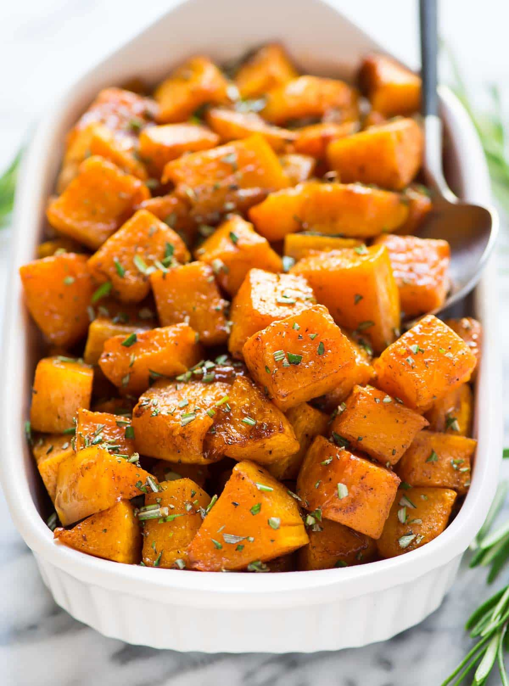

Roasted Butternut Squash

Butternut squash is so good on its own, that barely any
seasoning is needed. This recipe is so simple and easy.
This roasted butternut squash recipe is ballgown-worthy
flavor for yoga pants level of effort. It starts like any
other roasted vegetable recipe—olive oil, salt, and pepper—but
the simple additions of cinnamon, maple syrup, and fresh
rosemary elevate it and give it a festive flair that you’ll
be proud to share at the table.
Whether you are looking for a simple side to bring to
Thanksgiving dinner, or if you want to shake up your
weeknight roasted vegetable routine, this roasted butternut
squash hits the spot.
Ingrediants
The following is what we need to make this dish:
- 1 butternut squash - peeled, seeded, and cut into
1-inch cubes
- 2 tablespoons olive oil
- 2 cloves garlic, minced
- salt and ground black pepper to taste
Steps
- Preheat oven to 400 degrees F (200 degrees C).
- Toss butternut squash with olive oil and garlic in
a large bowl. Season with salt and black pepper.
Arrange coated squash on a baking sheet.
- Roast in the preheated oven until squash is tender
and lightly browned, 25 to 30 minutes.